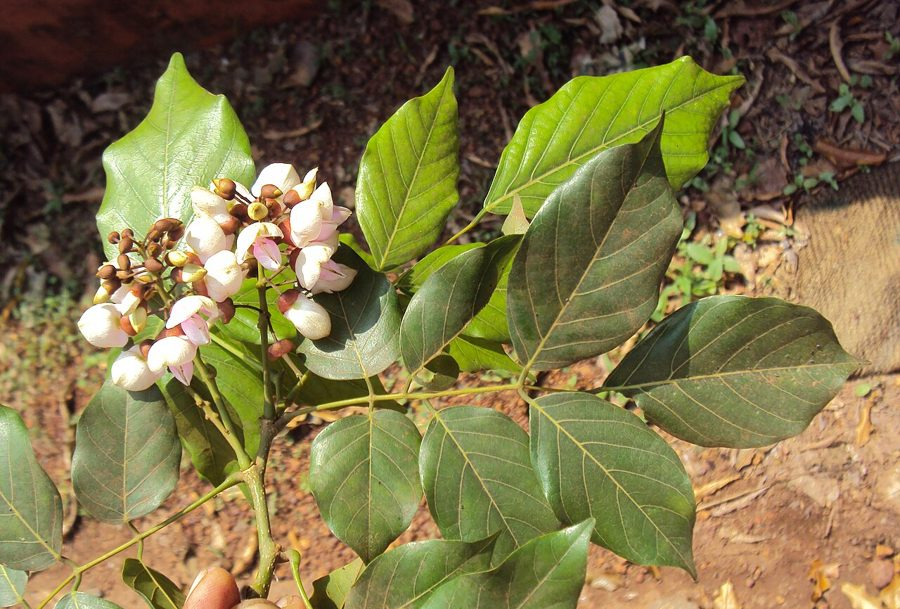

करंजIndian Beech
Millettia pinnata · Fabaceae · FLR-0064

- Scientific name
- Millettia pinnata (L.) Panigrahi
- Family
- Fabaceae
- Hindi
- करंज
- Status here
- native
- IUCN
- LC
When to look कब देखें
Present all year.
करंज / Indian Beech
Millettia pinnata (L.) Panigrahi — Fabaceae
करंज (पोंगिटम / पोंगामिया) — पूर्वी उत्तर प्रदेश के सड़क के किनारों, नहरों के तटबंधों और खेतों की सीमाओं पर पाया जाने वाला एक मध्यम आकार का, छायादार और अर्ध-सदाबहार (semi-evergreen) पेड़ है। इसके पत्ते चमकीले, गहरे हरे और पिन्नेट (pinnate compound) होते हैं। वसंत के अंत में इसके ऊपर छोटे, मटर के फूल जैसे हल्के गुलाबी-बैंगनी रंग के फूलों (pink-purple pea-like flowers) के गुच्छे आते हैं। इसके अंडाकार चपटे काठ जैसे फलियों में से मिलने वाले बीजों से 'करंज का तेल' (karanja oil) प्राप्त किया जाता है, जो कड़वा और गैर-खाद्य होता है, लेकिन पारंपरिक रूप से दीयों को जलाने, साबुन बनाने और आज बायोगैस व जैव-ईंधन (biofuel) के रूप में बहुत उपयोगी है। इसकी जड़ों में नाइट्रोजन-स्थिरीकरण ग्रंथियां (nitrogen-fixing roots) होती हैं जो मिट्टी को उपजाऊ बनाती हैं। त्वचा रोगों में इसकी पत्तियों और बीजों का लेप अत्यंत गुणकारी माना जाता है।
Quick Identification त्वरित पहचान
| Feature | Description |
|---|---|
| Tree habit | Medium-sized, fast-growing, semi-evergreen tree, up to 12–15 meters high with a dense, spreading dome-like canopy |
| Leaves | Pinnate compound leaves, with 5–9 leaflets; leaflets are glossy, ovate, smooth, and bright green |
| Flowers | Small, pea-like, pale pinkish-purple or white, arranged in short, crowded clusters (racemes) |
| Fruit | Short, flat, thick, woody, yellowish-grey, oval pod, ending in a short curved beak |
| Seeds | Usually a single, red-brown, bean-like seed inside each woody pod |
Field tip: Walk along canal banks in summer. Watch for trees with dense, very shiny, deep green leaves that reflect sunlight. Look for short, flat, thick woody pods hanging from the branches or scattered on the ground. The bark is smooth and greyish-brown.
Morphology आकारिकी
Biometrics (typical measurements of mature trees in the northern Indian plains):
| Measurement | Range |
|---|---|
| Tree height | 12–15 m |
| Trunk diameter (DBH) | 30–50 cm |
| Leaf length | 20–30 cm |
| Leaflet length | 5.0–10.0 cm |
| Pod length | 4.5–6.5 cm |
| Pod width | 2.5–3.5 cm |
Trunk and Bark: The trunk is short and crooked. The bark is smooth, thin, grey-brown, becoming slightly covered with small warty bumps (lenticels) as the tree ages.
Foliage: Alternate, odd-pinnate leaves. The leaflets are opposite, ovate-oblong, pointed, with a glossy, paper-thin surface that smells slightly of oil when crushed.
Flowers: Pale pink, lavender, or white, pea-like in structure, emitting a mild scent, grouped in axillary racemes.
Fruit and Seeds: The pod is thick, hard, woody, containing a single oblong seed. The pod does not open naturally (indehiscent), meaning the woody pod must decay in soil or water to release the seed.
Associated Species / Interactions संबंधित प्रजातियाँ
- Nitrogen-fixing bacteria: Host to Rhizobium bacteria in its root nodules, which capture atmospheric nitrogen and convert it into soil nitrates, enriching the surrounding soil.
- Pollinators: Visited by large numbers of giant honeybees (Apis dorsata) and carpenter bees during flowering.
- Larval Host: Serves as a host plant for the caterpillars of the Common Cerulean butterfly (Jamides celeno).
Pests and Diseases कीट और रोग
- Leaf Miner: Lithocolletis pentadesma caterpillars mine inside the leaflets, creating winding white paths and causing young leaves to curl and drop.
- Shoot Borer: Larvae of some moths bore into young growing shoots, causing tip dieback.
- Ganoderma Root Rot: In old or waterlogged soils, the fungus Ganoderma lucidum attacks the roots, causing wood rot.
Traditional and Ethnobotanical Use पारंपरिक और नृवंशवनस्पति उपयोग
- Topical Skin Remedy: The seeds are crushed and cold-pressed to extract Karanja oil, which is applied to treat chronic skin diseases, eczema, scabies, and ringworm infections due to its antiseptic properties.
- Traditional Pain-Relief Paste: The fresh leaves are boiled or crushed into a paste, which is applied as a hot poultice over painful joints and swellings to relieve rheumatic pain.
- Anti-septic Twigs: The thin green twigs are chewed at one end to make a brush, used traditionally in villages as a natural toothbrush to maintain gum health and prevent tooth decay.
- Natural Pesticide Formulation: The leaves are soaked in water to make a leaf extract, which is sprayed on vegetable crops as a organic pest repellent to deter chewing insects.
Expected Locally स्थानीय रूप से अपेक्षित
Not a field record. Written from published accounts for eastern Uttar Pradesh. No confirmed local sighting yet — if you have seen it, that is what the atlas needs.
अभी तक स्थानीय पुष्टि नहीं। यह विवरण प्रकाशित स्रोतों से है, किसी अवलोकन से नहीं।
A very common native tree along canal embankments and village border pathways throughout the Basti district. They are regularly observed in the Harraiya, Basti, and Vikramjot blocks. Farmers often plant them as windbreaks along the borders of their paddy fields, valuing the nitrogen-rich leaf litter that falls and composts naturally in the fields.
Distribution वितरण
Global range: Native to coastal and riverine regions of tropical Asia (India, Bangladesh, Myanmar, Southeast Asia) and northern Australia.
In India: Found throughout all plains and coastal zones, particularly along river corridors and waterways.
In Uttar Pradesh: Common state-wide in all districts, extensively planted along state highways and canals by the forest department.
In Basti district / eastern UP: Widespread across all agricultural blocks.
Research Questions शोध प्रश्न
Anyone can investigate these | कोई भी इन प्रश्नों की जाँच कर सकता है
- How long does it take for a woody Karanja pod to decay and allow the seed to germinate in wet soil? — Conduct seed germination trials.
- Does Karanja oil effectively repel household ants when wiped on kitchen shelves? — Monitor and record ant movements near oil lines.
- What is the density of nitrogen nodules on the root of a young Karanja sapling compared to a non-legume tree? — Dig and count root nodules.
- Which insects are the most frequent visitors to Karanja flowers in your block during May? — Conduct pollinator counts.
- Does the leaf miner infestation on Karanja decrease in trees planted in dry roadsides compared to wet canal banks? / क्या सूखी सड़कों के किनारे लगे करंज के पेड़ों में गीले नहर के किनारों वाले पेड़ों की तुलना में लीफ माइनर (Leaf Miner) का प्रकोप कम होता है? — Compare leaf damage in different sites.
Similar Species मिलती-जुलती प्रजातियाँ
| Species | How to tell apart | comparison |
|---|---|---|
| Drumstick Tree (Moringa oleifera) | Has much smaller, delicate leaflets; long ribbed hanging green pods; soft bark | सहजन — छोटे पत्ते, लंबी लटकी फलियाँ |
| Chinaberry (Melia azedarach) | Has bipinnate leaves; lilac flowers; fruit is a small round yellow toxic berry | बकाइन — बैंगनी फूल, गोल पीले दाने |
| Sissoo / Shisham (Dalbergia sissoo) | Has alternate leaflets; small yellow flowers; flat, thin paper-like pods | शीशम — छोटे एकान्तर पत्ते, चपटी कागजी फलियाँ |
Field rule: Medium semi-evergreen tree with glossy pinnate leaves (5–9 leaflets), pale pink pea-like flowers in summer, and short, flat, thick woody beaked oval pods containing a single seed, is the Indian Beech.
Taxonomy & Classification वर्गीकरण
Original description. Carl Linnaeus described this species as Erythrina pinnata in 1753. Panigrahi placed it in the genus Millettia in 1984 in his revisions. For long, it was widely known under the synonym Pongamia pinnata (L.) Pierre. The genus name Millettia honors the French botanist Charles Millett. The specific name pinnata is Latin for feathered/pinnate, referencing the leaf structure.
Subspecies. Monotypic — no subspecies are currently recognised.
Family and order placement. Placed in the order Fabales, family Fabaceae (legume family), subfamily Faboideae, tribe Millettieae.
Phylogenetic notes. Molecular studies support the transfer of Pongamia into Millettia, forming a monophyletic group of woody, nitrogen-fixing tropical trees.
IUCN status rationale. Assessed as Least Concern (LC) by the IUCN Red List (assessed by the IUCN SSC Global Tree Specialist Group). It has a massive range, is highly adaptable, and faces no major conservation threats.
Photo Gallery फोटो गैलरी
References संदर्भ
- Panigrahi, G. (1984). Millettia pinnata (L.) Panigrahi, a new combination. Journal of the Japanese Botany, Tokyo. [taxonomic revision]
- Brandis, D. (1906). Indian Trees. Archibald Constable & Co., London.
- Kirtikar, K. R. & Basu, B. D. (1935). Indian Medicinal Plants. Vol. I. Lalit Mohan Basu, Allahabad.
- Troup, R. S. (1921). The Silviculture of Indian Trees. Oxford University Press.
- International Legume Database & Information Service (2024). Millettia pinnata taxon details.
- GBIF Occurrence Data — Millettia pinnata, India (2010–2025).
Source file: species/flora/trees/indian_beech.md